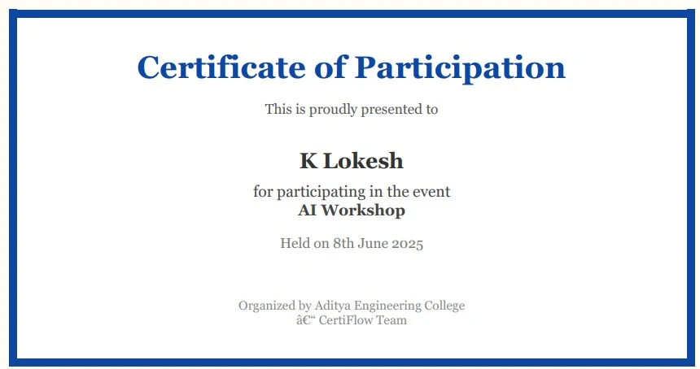
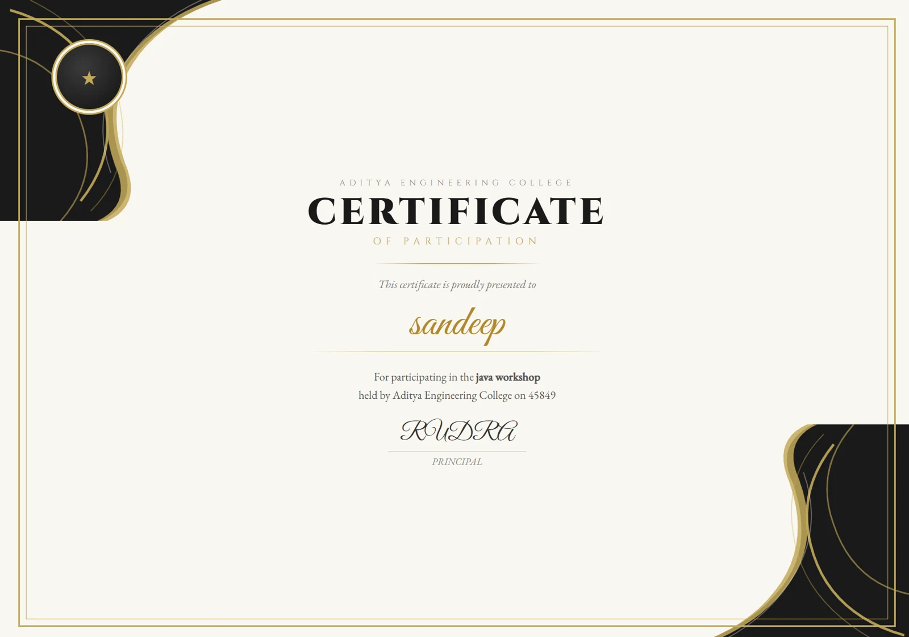

01THE FOUNDATION
One participant.
One personal moment.
Individual registration connects participant details to conditional certificate delivery.

Individual formParticipation checkEmail delivery
Try version 1 ↗BUILT WITH MICROSOFT 365
Every participant deserves their moment. CertiFlow connects your event data to personalized certificates, email delivery, and organized records.
A MOMENT WORTH RECOGNIZING
Proudly presented to
Your next achieverFor taking part. For showing up.
For making learning happen.
THE IDEA / LESS ADMIN, MORE IMPACT
Collecting names is only the beginning. Preparing certificates, checking participation, sending individual emails, and keeping records can become a repetitive task.
CertiFlow brings these steps into a connected Microsoft 365 workflow. It started with individual registrations and evolved to process an organizer’s participant spreadsheet.
Follow the flow ↓CHOOSE YOUR EXPERIENCE
Start with a single participant.
Or bring your entire event list.
Individual registration connects participant details to conditional certificate delivery.

A reusable Excel template helps organizers process multiple participants in one submission.

Live experiences open in Microsoft Forms. Microsoft sign-in or organization access may be required, especially for file uploads. This showcase does not submit data or send certificates itself.
YOUR QUICK-START GUIDE
BEHIND THE EXPERIENCE
Explore what each Microsoft tool
does inside CertiFlow.
Generate certificate → Store file → Email attachment → Log record
Send participation update → Log record without a certificate
SEE THE REAL PROJECT
Original screen recordings from
the two CertiFlow versions.
A CLOSER LOOK
Actual interfaces and outputs
from your Microsoft 365 workflow.
THE EVOLUTION
| Capability | CertiFlow 1 | CertiFlow 2 |
|---|---|---|
| Starting point | Individual Microsoft Form | Organizer’s Excel upload form |
| Participant input | One form response at a time | Multiple rows in ParticipantsTable |
| Record management | Response workbook + SharePoint tracker | Master Excel table + SharePoint records |
| Personalization | Participant, event, date | Participant, event, date, organizer name & title |
| Certificate delivery | HTML certificate via Outlook | Redesigned HTML certificate via Outlook |
| Participation-based emails | Certificate or non-participation message | Redesigned certificate or participation update |
EXPLORE THE DETAILS
Download the guide, presentation, and official upload template.
THE PEOPLE BEHIND THE FLOW
Pool 1 · Team 4
Technical Hub internship project
23P31A4237
Power Automate workflow & integrationsGitHub ↗23P31A05G5
Project team23P31A4248
Project team23P31A05H3
Project team23A91A6171
Project teamMentorship from Nagendra Kishore Girajala and Jakke Harshavardhini, with thanks to Babji Neelam, Founder & CEO, Technical Hub.
BEFORE YOU TRY
Use version 1 to explore an individual participant submission. Use version 2 if you are an organizer with a list of participants in Excel. Both links open the actual Microsoft Forms experiences.
Provide an email address you can access and the correct participation status. When the connected automation processes the record, eligible participants receive a certificate attachment. Check your inbox and spam folder. Availability depends on the connected Microsoft 365 flow.
The demonstrated certificate is an HTML attachment. Open it in a browser, choose Print, and select Save as PDF if you need a PDF copy.
Keep the column headers and the table name ParticipantsTable unchanged. Fill the provided columns, enter a single participation value per row, and save as .xlsx. The current sample uses Yes and No; follow any updated instructions in the live form.
Microsoft Forms access is controlled by the form owner. The file-upload experience may require an account in the permitted organization. If you cannot access it, watch the walkthrough to explore the process.